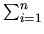

Induction
Mathematical Induction -- Second Principle
Subjects to be Learned
- second principle of mathematical induction
Contents
There is another form of induction over the natural numbers based on the
second principle of induction to prove assertions of the form
 x P(x) .
This form of induction does not require the basis step, and in the inductive step
P(n) is proved assuming
P(k) holds for all k
< n .
Certain problems can be proven more easily by using the second principle than the first principle
because P(k) for all k < n can be used rather than
just P(n - 1) to prove P(n).
x P(x) .
This form of induction does not require the basis step, and in the inductive step
P(n) is proved assuming
P(k) holds for all k
< n .
Certain problems can be proven more easily by using the second principle than the first principle
because P(k) for all k < n can be used rather than
just P(n - 1) to prove P(n).
Formally the second principle of induction states that
if
n [
k [ k < n
 P(k) ]
P(n) ] ,
then
n P(n)
can be concluded.
P(k) ]
P(n) ] ,
then
n P(n)
can be concluded.
Here
k [ k < n
P(k) ]
is the induction hypothesis.
The reason that this principle holds is going to be explained
later after a few examples of proof.
Example 1: Let us prove the following equality using the second principle:
For any natural number n ,
1 + 3 + ... + ( 2n + 1 ) = ( n + 1 )2.
Proof: Assume that
1 + 3 + ... + ( 2k + 1 ) = ( k + 1 )2
holds for all
k,
k
< n.
Then 1 + 3 + ... + ( 2n + 1 ) = ( 1 + 3 + ... + ( 2n - 1 ) ) + ( 2n + 1 )
= n2 + ( 2n + 1 ) = ( n + 1 )2 by the induction hypothesis.
Hence by the second principle of induction
1 + 3 + ... + ( 2n + 1 ) = ( n + 1 )2
holds for all natural numbers.
Example 2: Prove that for all positive integer n,

i ( i! )
= ( n + 1 )! - 1
Proof: Assume that
1 * 1! + 2 * 2! + ... + k * k! = ( k + 1 )! - 1
for all k,
k
< n.
Then
1 * 1! + 2 * 2! + ... + ( n - 1 ) * ( n - 1 )! + n * n!
= n! - 1 + n * n! by the induction hypothesis.
= ( n + 1 )n! - 1
Hence by the second principle of induction
i ( i! )
= ( n + 1 )! - 1
holds for all positive integers.
Example 3: Prove that any positive integer n, n > 1,
can be written as the product of prime numbers.
Proof: Assume that for all positive integers k,
n > k > 1,
k can be written as the product of prime numbers.
We are going to prove that n can be written as the product of prime numbers.
Since n is an integer, it is either a prime number or not a prime number.
If n is a prime number, then it is the product of 1, which is
a prime number, and itself. Therefore the statement holds true.
If n is not a prime number, then it is a product of two positive integers,
say p and q. Since both p and q
are smaller than n, by the induction hypothesis they can be written
as the product of prime numbers (Note that this is not possible, or at least very hard,
if the First Principle
is being used).
Hence n can also be written as the product of prime numbers.
Test your understanding of second principle of induction :
Indicate which of the following statements are correct and which are not.
Click True or False , then Submit. There is one set of questions.
Next -- Introduction to Relation
Back to Schedule
Back to Table of Contents